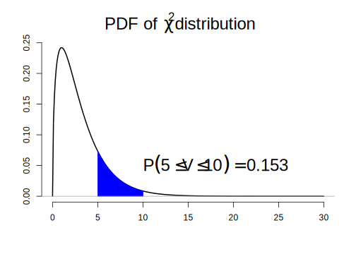

4.2 통계 분포 함수
R은 현존하는 대부분의 통계 확률 분포 함수를 제공하고 접두사 + 분포이름 형태의 함수명을 갖고 있으며, 보통 다음과 같은 접두사를 통해 분포 함수 생성
d: 밀도(density)의 약어로 확률 밀도함수(probability density function, pdf) 또는 이산형 분포의 확률 질량 함수(probability mass function, pmf)q: 분위수(quantile)의 약어로 상위 %에 해당하는 \(x\) 값을 반환p: 누적분포함수(cumulative density function, cdf)r: 특정 분포로부터 난수(확률변수) 생성
예:
dnorm(),qnorm(),pnorm(),rnorm()은 정규분포 관련 함수임
| Distribution | Density/Mass function | R pdf | R cdf | R quantile | RV generation | Parameter |
|---|---|---|---|---|---|---|
| 균일분포 | \(\frac{1}{b -a},~\mathrm{for}~x \in [a, b]\) | dunif | punif | qunif | runif | min (a), max (b) |
| 지수분포 | \(\lambda \exp{(-\lambda x)}\) | dexp | pexp | qexp | rexp | rate (\(\lambda\)) |
| 정규분포 | \(\frac{1}{\sqrt{2\pi}\sigma}\exp \left\{-\frac{(x - \mu)^2}{2\sigma^2} \right \}\) | dnorm | pnorm | qnorm | rnorm | mean (\(\mu\)), sd (\(\sigma\)) |
| \(\chi^2\) 분포 | \(\frac{1}{\Gamma(\nu/2)2^{\nu/2}}x^{(\nu/2) - 1}e^{(-x/2)}\) | dchisq | pchisq | qchisq | rchisq | df (\(\nu\)) |
| \(t\) 분포 | \(\frac{\Gamma(\frac{\nu + 1}{2})}{\Gamma{(\frac{\nu}{2}})}\frac{1}{\sqrt{\nu\pi}}\frac{1}{(1 + x^2/\nu)^{(\nu + 1)/2}}\) | dt | pt | qt | rt | df (\(\nu\)) |
| 이항분포 | \({n \choose x} p^x (1 - p)^{n - x}\) | dbinom | pbinom | qbinom | rbinom | size (\(n\)), prob (\(p\)) |
| 포아송 분포 | \(\frac{e^{-\lambda}\lambda^x}{x!}\) | dpois | ppois | qpois | rpois | lambda (\(\lambda\)) |
예제: 확률 분포 함수
## 카이제곱분포
x <- seq(0, 30, by = 0.1)
y <- dchisq(x, df = 3) # 자유도가 3인 카이제곱분포 밀도 함수
plot(x, y, type = "l",
bty = "n",
xlab = "", ylab = "",
main = expression(paste("PDF of ", ~chi^2, " distribution")),
lwd = 2,
cex.main = 2)
# P(5 < V < 10)
pchisq(10, df = 3) - pchisq(5, df = 3)[1] 0.153231## 그림에 표현
idx <- x >= 5 & x <= 10
polygon(c(5, x[idx], 10),
c(0, y[idx], 0),
col = "blue",
border = "blue")
abline(h = 0, col = "darkgray")
text(x = 10, y = 0.05, cex = 2,
bquote(P({5 <= V} <= 10 ) ==
.(sprintf("%.3f", pchisq(10, df = 3) - pchisq(5, df = 3)))),
adj = 0)
# 분위수
qchisq(pchisq(10, df = 3), df = 3) [1] 10# 난수 생성
v <- rchisq(1000, df = 3)
mean(v) # 카이제곱분포의 평균은 이론적으로 자유도 값과 같음 [1] 2.994